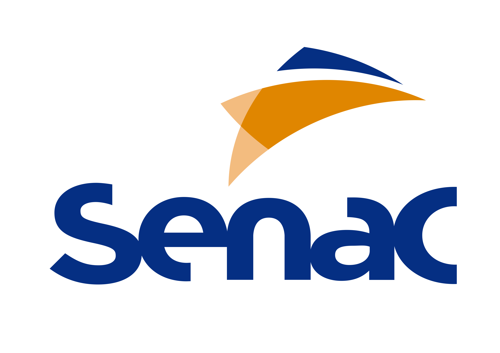
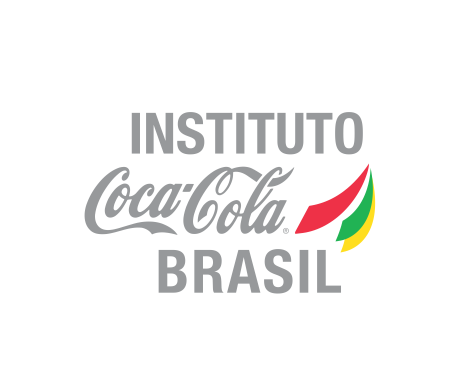
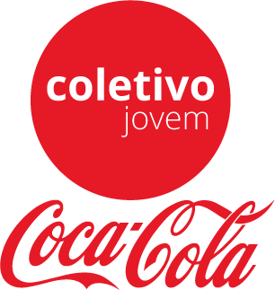
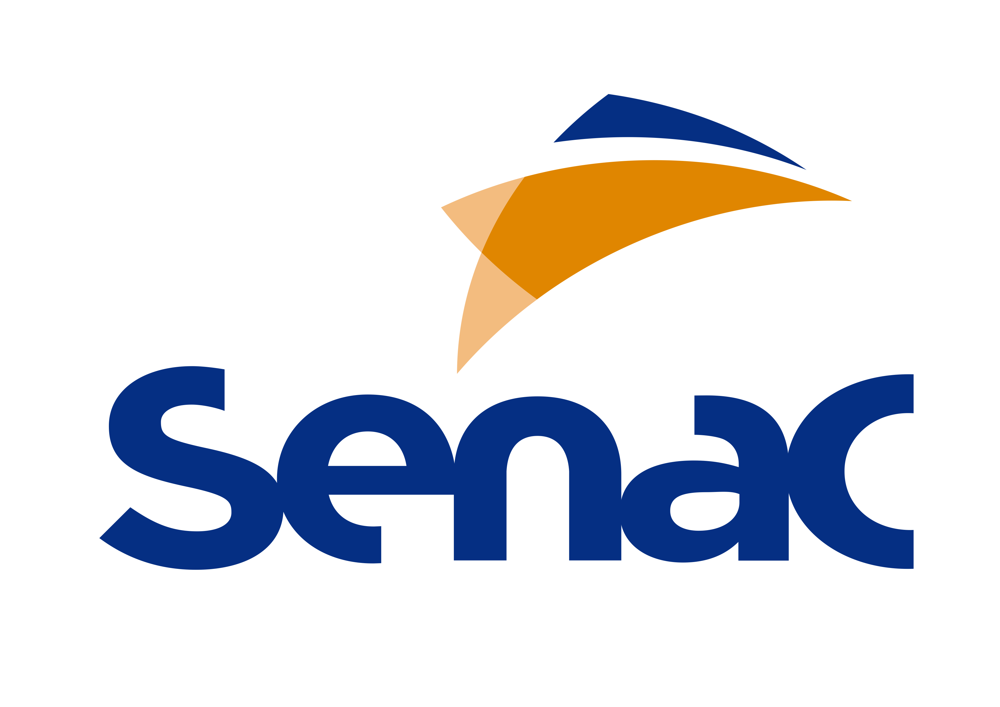
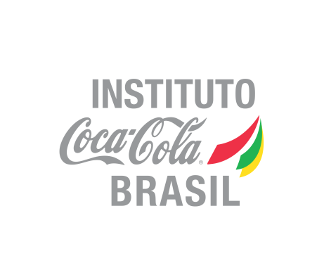
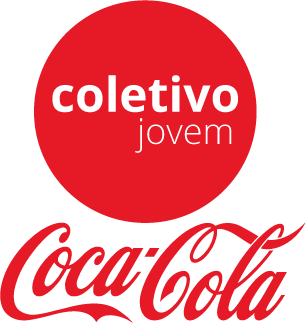

A mensageiros
Somos uma Associação Sem Fins Lucrativos, fundada em 1998 que nasceu com o intuito de entender como viviam as pessoas de comunidades vulneráveis, pois uma grande tragédia aconteceu: um menino cheio de sonhos chamado Tiago Souza Machado havia sido estupidamente assassinado, por outro adolescente da mesma idade.
Com uma vontade enorme de transformar esse tipo de cenário um grupo liderado por Verônica Machado, que era irmã de Tiago, cria a ONG Mensageiros da Esperança e assim começa uma trajetória de transformações e aprendizados...
Hoje, a ONG Mensageiros da Esperança há mais de 19 anos investe nos jovens, estimulando suas potencialidades através das atividades socioeducativas usando como principais ferramentas a educação, tecnologia, sustentabilidade e o empreendedorismo, fomentando o protagonismo juvenil e desde 2012 vem trabalhando com mulheres em vulnerabilidade social e/ou emocional, desenvolvendo competências empreendedoras para que através de seus talentos e habilidades, possam gerar renda, tornando-se protagonistas de suas vidas, pois acreditamos que uma mulher empoderada muda tudo ao seu redor.
Com as atividades desempenhadas já capacitamos mais de 13500 pessoas diretamente e mais de 60.000 indiretamente.
Nossa sede esta localizada na Lapa de Baixo, mas nasceu na Brasilandia onde tem seu maior foco de atuação, pois esse é um dos distritos mais violentos da cidade de São Paulo.
Missão
Voltada para Serviços Sociais, utilizamos como ferramentas de educação e transformação: a arte, cultura, inclusão digital reciclagem e sustentabilidade.
Visão
Ser referencia em capacitar e empoderar comunidades vulneráveis.
Valores
Amor, resiliencia, confiança, esperança, colaboração, respeito e gratidão.
 




